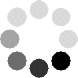

 Loading...
Setting up game engine...
Loading...
Oops!
Looks like the game is not working. But don't worry.
- Check if JavaScript is enabled or Ad-Blockers are turned off.
- Try to refresh the game by pressing Ctrl+F5.
- Try to reload the game in about 10-15 minutes.
- If none of these work:
- open the web console by pressing F12,
- go to the "Console" tab,
- take screenshots of all errors (red texts),
- post them on Discord.
>
close
CSS themes: shrx, Kida, Volkeyrn (see top bar of each theme).
Code contributions:
Thanks a lot to 4chan/igg for being such a nice guys.
Thanks a lot to /r/kittensgame community for all the feedback and testing.
Special thanks to Kittens Game discord mods and members
Special thanks for anyone who is not in the list, we still love you <3
tumblr icon by
Moonlight-pendent13
Warmest thanks to
ainil for the long months of support and feedback during the formative days of KG.
Thanks to mothloveslamp for supporting me and keeping me sane in my darkest hours.
And finally, my undying gratitude to Waraiko.
close
Kittens Game Mobile has been released! Click on the link to follow:
Android |
iOS